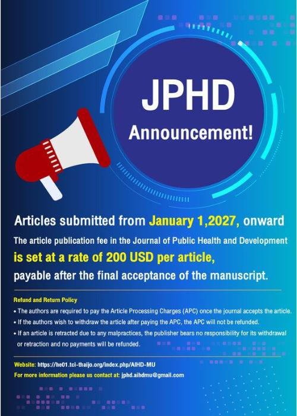

JPHD Announcement Article Processing Charge (APC) Effective January 1, 2027
2026-06-30
JPHD Announcement Article Processing Charge (APC) Effective January 1, 2027
The Journal of Public Health and Development (JPHD) announces that, effective for all manuscripts submitted on or after January 1, 2027, the Article Processing Charge (APC) will be USD 200 per article.
The APC is payable only after the manuscript has successfully completed the peer-review process and has received final acceptance for publication.
Refund and Return Policy
Authors are requested to note the following APC policy:
- The APC must be paid after the manuscript has been officially accepted for publication.
- If authors choose to withdraw their manuscript after the APC has been paid, the APC is non-refundable.
- If a published article is retracted due to research misconduct or any form of publication malpractice, the publisher assumes no responsibility for the withdrawal or retraction, and no refund of the APC will be provided.
